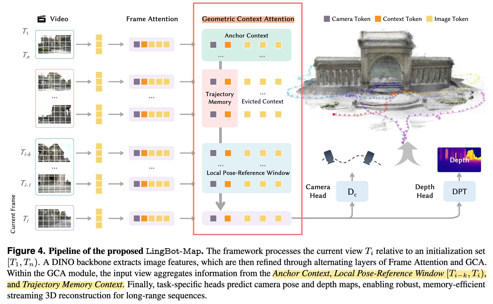
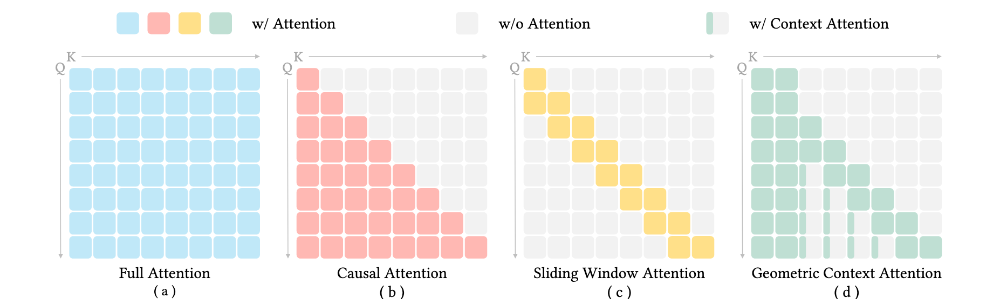
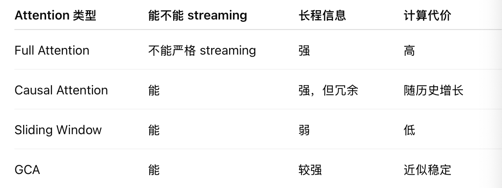
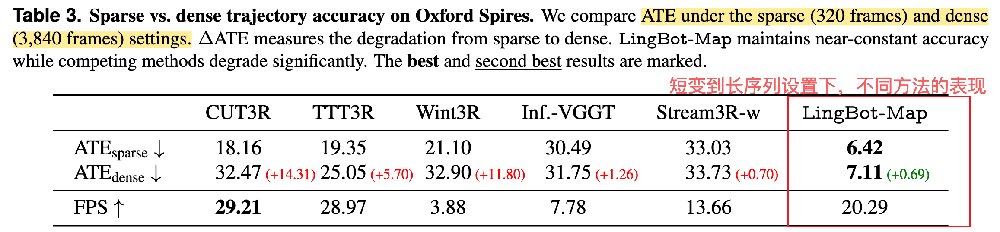
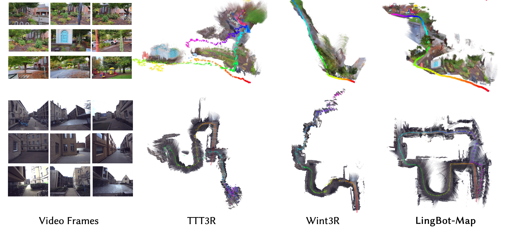
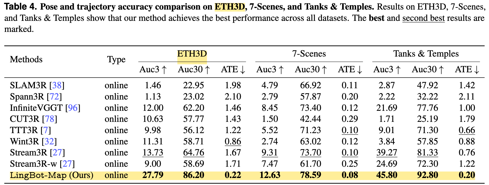
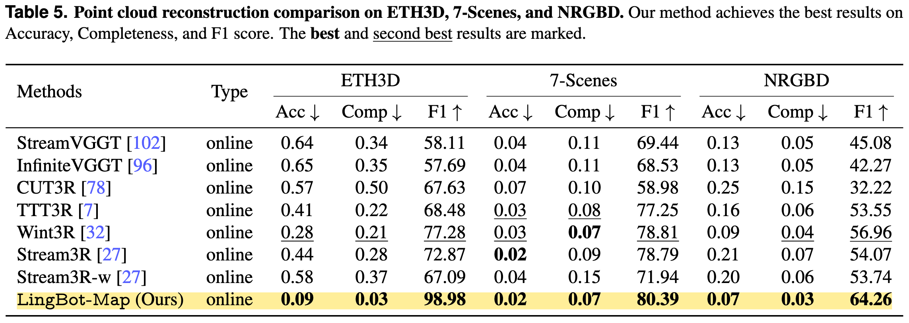
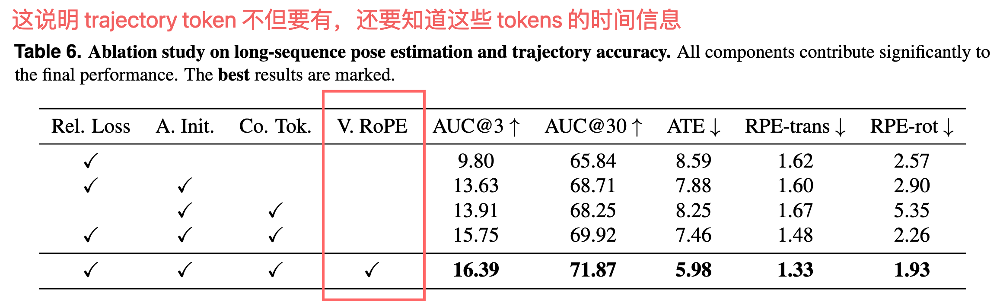

Feed-Forward Streaming 3D Reconstruction Model
VGGT-like 工作，亮点：==**structured memory + geometric context attention
折中：SLAM 的结构先验 + Transformer 的可学习 attention。
0.记录
（1） Lingbot-Map 的记忆管理机制
1. Method
把 SLAM 里的 anchor / local window / global map 的思想改成 Transformer 的结构化 attention memory，feed-forward streaming 3D reconstruction。依靠 Geometric Context Attention 来在推理时选择性地保留上下文。(声称可以处理 10,000+ 帧)
Stage 1: train offline VGGT-like base model
Stage 2: replace global att[2026-04-23-WinT3R](2026-04-23-WinT3R.md)ention with GCA and train streaming model认为 VGGT-style global attention model 可以提供强几何先验，但不能直接用于 streaming
- 用前 n 帧 anchor 固定尺度；（VGGT全局point cloud normalization）
- causal geometric context attention; （VGGT frame-wise attention & global attention）
- anchor + local window + trajectory memory（抑制drift）；
- old frames 只保留 compact tokens；
- local pose window 会保留最近帧的
1.1. Pipeline

（1）推理数据流
Video frame I_t
↓
DINOv2 ViT backbone
↓
image tokens + camera token + register tokens + anchor token
↓
Frame Attention
↓
Geometric Context Attention, GCA
├── attend to Anchor Context
├── attend to Local Pose-Reference Window
└── attend to Trajectory Memory
↓
Camera Head → predicted camera pose P_t
Depth Head → predicted depth map D_t
↓
pose + depth → point cloud / trajectory / reconstruction（2）两种模式
a. 直接输出
默认就是这个模式。GCA 状态一直累积，不 reset。没有窗口间的 Sim(3) 对齐，适合不过分长的序列，大概 3000 以内。
b. Visual Odometry (SLAM - VO)
适合超长序列。
video - overlapping local windows - 窗口内 GCA inference - 窗口结束 reset - 窗口之间 Sim(3) 对齐 - 全局轨迹
理论上可以跑任意长的序列，但是在窗口的边界会引入额外的 Sim(3) 对齐误差，所以窗口越多，drift 的累积也就会越明显。
1.2. Structured Memory
**==anchor & trajectory memory & local window
按照几何功能来分层存储历史信息。
(1) Anchor context -- 尺度参考
选择前 n 帧作为 anchor frames，类似于 SLAM 中的 key frames。这些帧用 full attention 初始化，保留完整的 image tokens，并且能让后续的所有帧都可以 attend 到。这样就保证在 Streaming 的过程中建立了一个稳定的参考 ，==把尺度与全局参考固定了。==
假如没 anchor 后续的尺度和坐标系可能就漂移了。
(2) Local pose-reference window -- 局部几何
只靠 anchor 不够。如果第 1 帧在门口，第 500 帧已经走到走廊尽头。那当前帧和第一帧可能几乎没视觉重叠，强行对 anchor 配准没有意义。
准确加新帧要和附近的观测有 dense visual overlap，所以得保留最近 k 帧的 full image tokens，并在 local window 内加入 relative pose loss。这样就方便于局部场景对齐。dense visual cues 包括：
- 局部纹理匹配
- 相近视角的overlap
- 帧间的相对运动估计
(3) Trajectory memory -- 长序列轨迹
如果只有 anchor + local window 那就是中间走过的历史完全丢了，只留下：anchor frames + window 中的 frame。这样就容易出现长序列的累积错误，出现 drift。
丢弃 heavy 的 image tokens，用轻量的 context token 来串联上下文，每一个过去的 frame 保留一个 context token： context token = anchor token + camera token + 4 register tokens
- 比 persistent state 更有结构，不容易被忘记；
- 比 causal cache 节省计算资源。 causal cache 信息完整但是显存线性增长，缺乏筛选会导致冗余几何过多混入。
- 比 sliding window 更稳定，不会造成过早期记忆完全丢失，对回环效果好。
1.3. Geometric Context Attention
==KV cache organization & geometry-aware memory selection
把三种 structured memory 组合进 structured attention mask，在每一帧有限的消耗下确保长期一致性。


- T：总帧数；
- M：每帧 image tokens 数，假设 500；
- n：anchor frames 数；
- k：local window size
causal attention: T(M+6)。 多一帧多 （M+6）tokens. gca: (n+k)(M+6) + 6(T−n−k) 。也就是说多一帧多 6 tokens.
2. Results
2.1. Training & Inference
双阶段训练。
(1) 训练 Base model，用 global attention. 160K iterations. 21500 GPU hours.
(2) 训练 Streaming model，开始启用 geometric context attention. 160K iterations. 15360 GPU hours.
推理可以做到 20 FPS. (518 × 378、window size 64、FlashInfer paged KV-cache)
2.2. Experiments





2.3. Limitations
(1) 缺少显式的回环矫正；
(2) Trajectory 的压缩在超超长序列中仍然是可能丢信息的；
(3) 没有 test-time optimization
(4) Direct mode 训练最多 320 views 但是经验上可以稳定在 3000 frames，再长了就得退化。但是真的长视频（VO mode）又会引入窗口间的 Sim(3) error.
(5)训练成本高